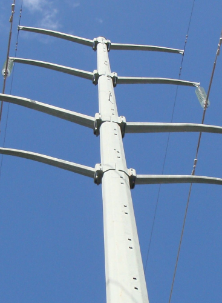
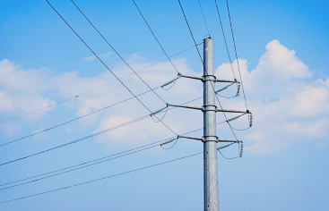
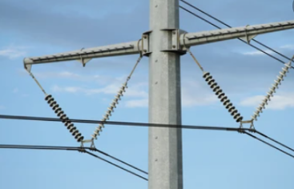
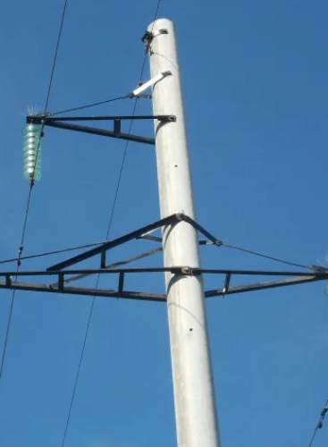

Products
Yunmei company specialized in the production of steel transmission poles 35-220kV and is an excellent supplier of State Grid Worldwide.




The unique Yunmei Poles manufacturing process creates hollow, steel-reinforced concrete poles of great strength and relatively light weight, by spinning the mould at high speed.
Consult me
Yunmei company specialized in the production of steel transmission poles 35-220kV and is an excellent supplier of State Grid Worldwide.